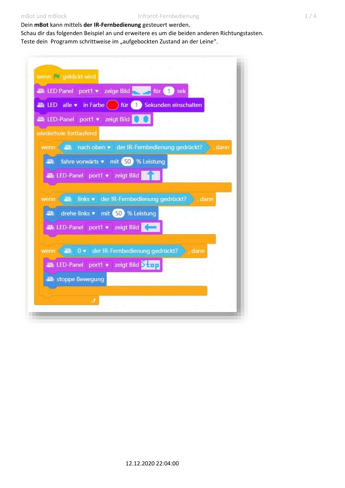
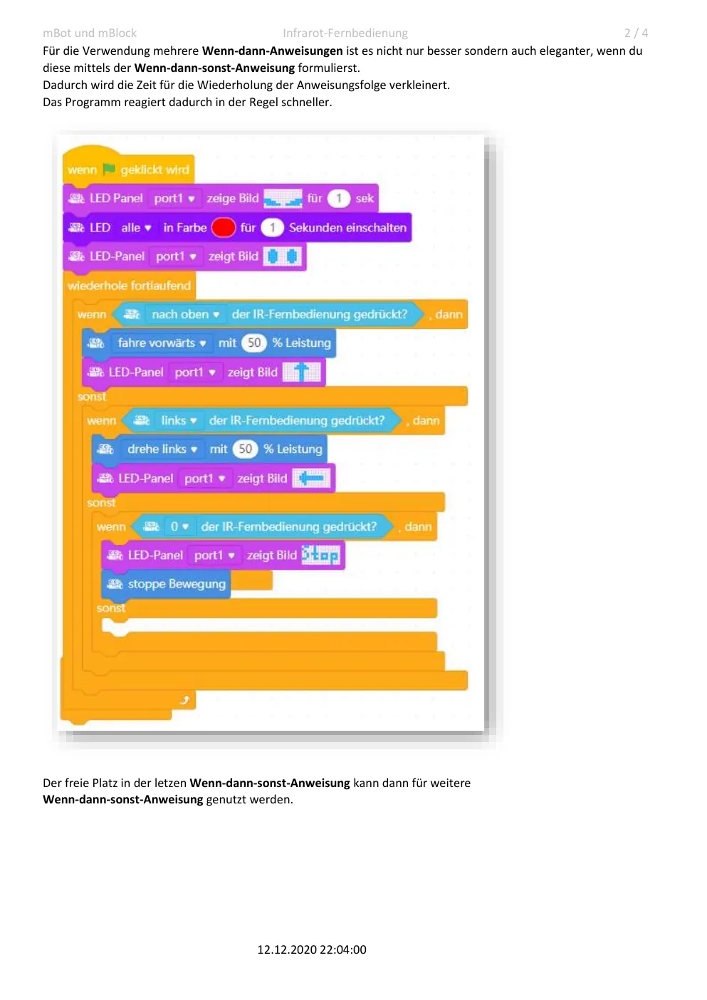
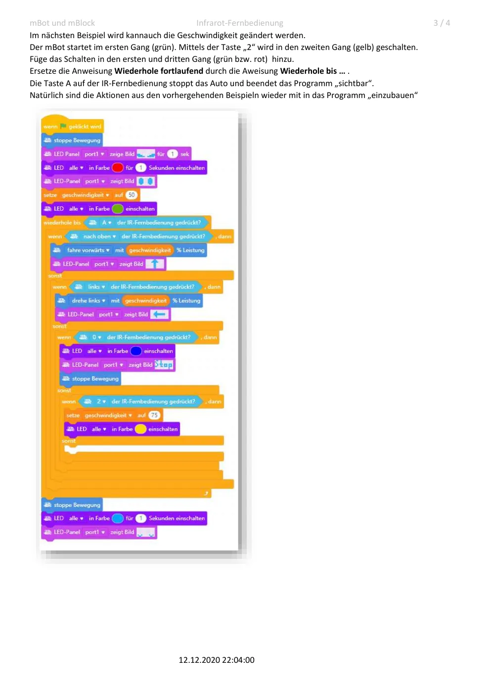
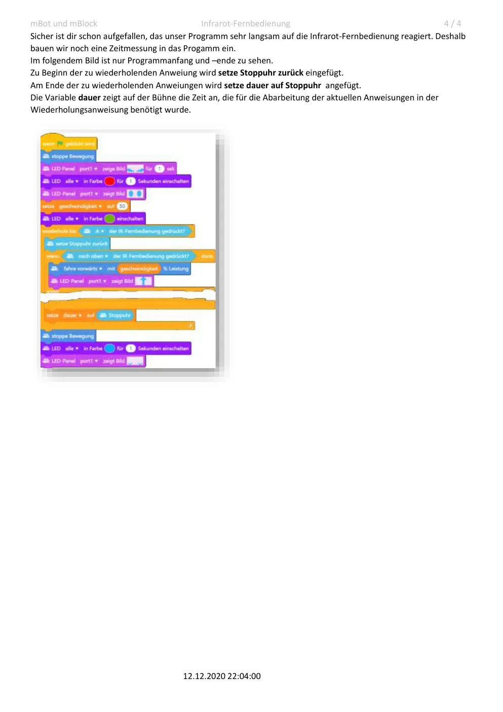

Die Infrarot-Fernbedienung überträgt Tastencodes an den IR-Empfänger des mBot. Die Programme werden schrittweise von einfachen Richtungsabfragen zu einer verschachtelten, schnelleren Steuerung erweitert.
1. Richtungstasten
Übernimm das erste Beispiel und ergänze die noch fehlenden Richtungstasten. Ordne jeder Taste eine eindeutige Motorbewegung zu und lege fest, was ohne gültigen Tastencode geschehen soll.
2. Verzweigungen strukturieren
Mehrere unabhängige Wenn-dann-Anweisungen prüfen in jedem Schleifendurchlauf alle Bedingungen. Eine verschachtelte Wenn-dann-sonst-Struktur kann übersichtlicher sein und unnötige Prüfungen vermeiden. Nutze den letzten Sonst-Zweig für weitere Tastencodes oder für den sicheren Stopp.
3. Gänge und Programmende
- Der mBot startet im ersten Gang; die LEDs zeigen den Gang beispielsweise grün an.
- Mit Taste 2 wird in den zweiten Gang geschaltet und die Anzeige wird gelb.
- Ergänze den ersten und dritten Gang mit passenden Farben und Geschwindigkeiten.
- Ersetze die fortlaufende Wiederholung durch wiederhole bis.
- Unterscheide klar: Taste 0 kann die Motoren anhalten; Taste A beendet die Wiederholung und damit das Programm sichtbar.
4. Reaktionszeit untersuchen
Setze zu Beginn jedes Schleifendurchlaufs die Stoppuhr zurück und speichere am Ende ihren Wert in der Variablen dauer. Die Anzeige zeigt, wie lange ein Durchlauf der Steuerlogik benötigt. Vereinfache danach die Bedingungen und vergleiche die Reaktionszeit.
Originalansicht des früheren PDFs
{kind=link}

{kind=link}

{kind=link}

{kind=link}
